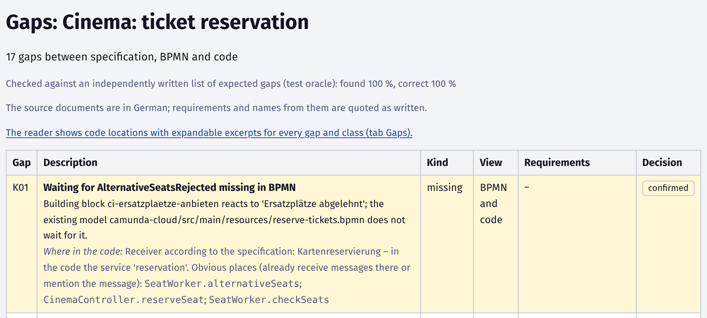

How Kanonik finds a gap
A short story from the cinema demo – step by step, no prior knowledge needed.
The customer says no – and nothing happens
Anna wants to reserve two cinema tickets. The seats she wants are taken; the cinema offers her two other seats. Anna doesn't like them – she declines.
What was agreed
What the application should do is written down by the business side in a specification – a document with numbered requirements. The cinema's specification (written in German) says in section 4.3:
If the customer declines or the confirmation period expires, the reservation is cancelled.
And in the table of messages: "Alternative seats rejected – from the customer to the ticket reservation".
What was built
The flow is implemented as a process model – a diagram in BPMN notation that a process engine runs step by step. Where the customer is supposed to confirm the alternative seats, the model waits for exactly one message: the confirmation. It does not wait for a rejection. The program code, too, only offers a way to accept the offer – none to decline it.
What that means
Anna's "no" never arrives. Her reservation stays open until a two-minute period expires and the system cancels it on its own. In operation nobody notices: in the end the reservation is cancelled – just for the wrong reason, and late.
How Kanonik finds it
Kanonik reads all three – specification, process model and code – and puts them side by side. The specification names a message the model never waits for. That is a gap: a place where specification, model and code don't fit together. For every gap Kanonik shows where the expectation comes from (here the step "offer alternative seats" from section 4.3), which model is affected and where in the code the message would have to arrive.

Who decides
Not every gap is a defect – maybe the rejection was left out on purpose. A business expert decides. Kanonik records her decision with its reason; it is kept for the next comparison. She confirmed this gap.
And the whole project?
In the cinema application Kanonik found 17 such gaps: missing process steps, data the code doesn't know, messages that might be processed twice. All with the same kind of evidence: gaps in the cinema demo.
And in your project?
A specification, a process model and a code repository are enough for a first assessment: request an assessment for your project.